Onde estava a ativação do adesivo?
Clientes recorriam à central para ativar o adesivo. Investiguei onde esse caminho se perdia no app.
EntregaAtalho “Ativar adesivo” na home e aviso de chegada do adesivo.
Sou Carlos Menezes, product designer que transita entre pesquisa, arquitetura da informação, UX Writing e design systems, do discovery à interface.
Já trabalhei com marcas como Digio, Uber Conta, Veloe, B3, Centauro, Nike e Enforce.
Vim da Arquitetura e Urbanismo, passei por CX e continuo interessado em como as pessoas encontram caminhos. Fique à vontade!
Clientes recorriam à central para ativar o adesivo. Investiguei onde esse caminho se perdia no app.
EntregaAtalho “Ativar adesivo” na home e aviso de chegada do adesivo.
O Digio lançaria um cartão Visa Signature para quem já era cliente. Testei se as pessoas entendiam o valor da oferta e onde consultariam os benefícios.
EntregaAjustes de oferta e cobrança que seguiram para o MVP.
A B3 avaliava desativar o app do Tesouro Direto. Investiguei o que os investidores faziam por ele e o que perderiam sem esse canal.
EntregaRecomendação de manter o app, com prioridade para consulta e investimento.
Conecto pesquisa com usuários, regras de negócio e UX/UI para transformar problemas complexos em jornadas claras.
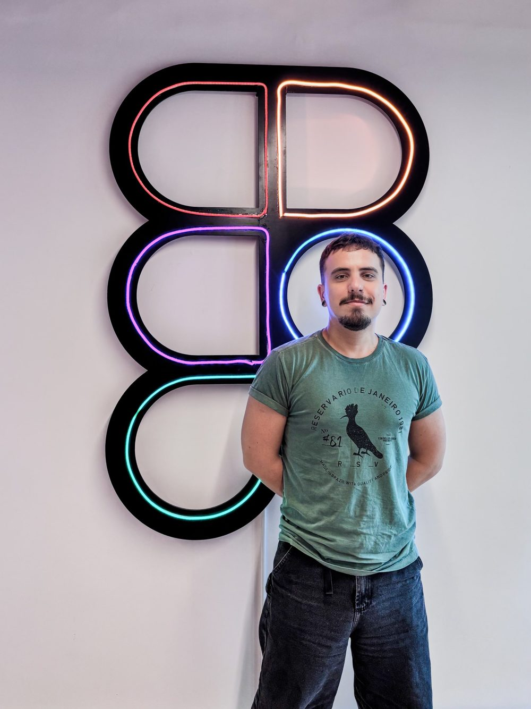
Produtos financeiros e plataformas B2B. Trabalho com Produto e Engenharia da investigação do problema ao acompanhamento da implementação. Vim da Arquitetura e passei por CX antes do design. Daí vem o meu olhar para a experiência do cliente e para decisões orientadas por dados.
Ele é prático e sua didática para explicar é simplesmente genial, ele torna assuntos difíceis muito mais simples para todos entenderem! Brilha demais no storytelling!
Ele me ensinou muito quando migrei de UX Writer para UX Designer no time. A técnica em UX do Carlos faz ele se destacar junto às soft skills dele.
Clientes tinham dificuldade para ativar o adesivo pelo app e recorriam à central de atendimento. “Problemas com ativação de adesivo” era o 3º motivo de contato (Contact Rate) e o 4º no ranking de deslikes do NPS. Conduzi a investigação para entender onde esse caminho se perdia.
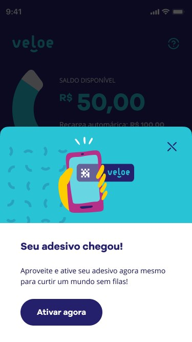
No teste de usabilidade do novo app, observei a tarefa de ativar o adesivo. Em vez de usar o atalho previsto, o card “Meus produtos” na home, os participantes faziam um caminho maior: abriam “Minha conta”, na navegação inferior, para procurar o adesivo. Os cards coloridos da home eram notados e logo esquecidos. O de “Meus produtos” nem parecia clicável.
Participantes: clientes do Sudeste e do Centro-Oeste, entre novembro e dezembro de 2020.
63% usavam o app com frequência · 37% eram clientes novos
75% no pré-pago · 25% no pós-pago
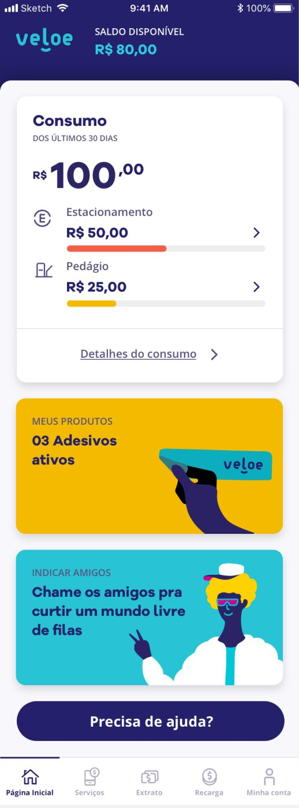
1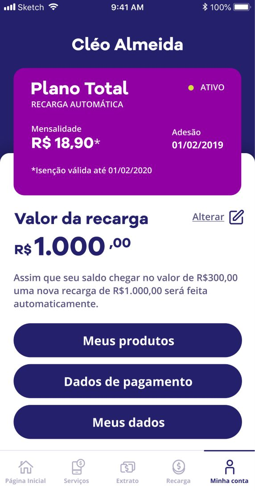
2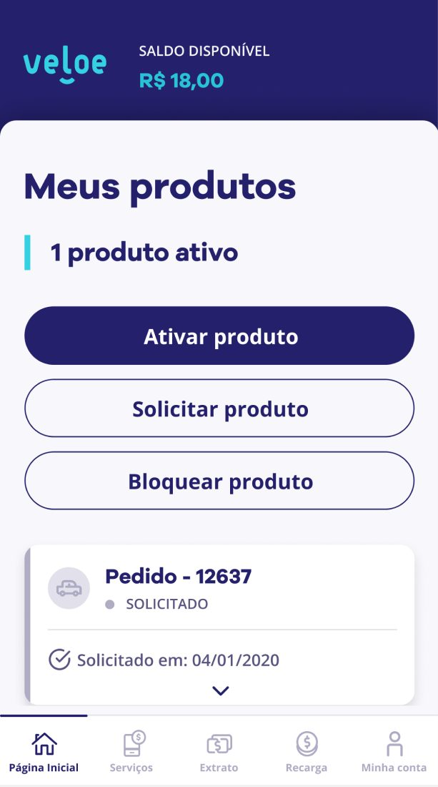
3Para entender a dificuldade, cruzei três fontes de insights.
Ligações sobre ativação, para entender os motivos do contato e as palavras usadas.
Registros feitos por clientes ao longo do uso do serviço, do recebimento ao primeiro uso.
A tarefa de ativação no app, observando o caminho escolhido.
Escuta de chamadas em dezembro de 2020
* Em metade das ligações, o motivo ficou sem registro: os atendentes não perguntaram.
Algumas pessoas desconheciam a exigência de ativar a tag antes de usar.
Outras sabiam que precisavam ativar e procuravam o comando no app.
Uma regra do app escondia “Ativar produto” quando o sistema não tinha pedido de adesivo daquele cliente.
Dar destaque à ativação na home ajudaria principalmente o segundo grupo. As três situações vêm da síntese qualitativa e não correspondem a parcelas das ligações ouvidas.
Cada ponto de contato chamava a tarefa de um jeito. A embalagem dizia “Ative a tag pelo aplicativo ou site”. No app, a pessoa encontrava “Meus produtos” e depois “Ativar produto”.
| Canal | Como a tarefa aparecia |
|---|---|
| Embalagem | “Ative a tag pelo aplicativo ou site” |
| App | “Meus produtos” e, depois, “Ativar produto” |
| Clientes nas ligações | “Ativar” foi o verbo mais usado (42%). 83% chamavam o objeto de “tag”. |
| Participantes do teste | Parte deles achava que “produto” era algo diferente do adesivo. |
| Atendentes | 92% usaram “ativar” e “tag”. |
| Marketing | Havia escolhido “adesivo” como nome do produto. |
Escuta de chamadas em dezembro de 2020
Para o objeto, 83% disseram “tag”.
“Ativar” era o verbo mais usado por clientes e atendentes. “Adesivo” era o nome do produto escolhido pelo Marketing.
Toque numa etapa para ver o sentimento e as dores. A curva é qualitativa, não uma medida.
Do entusiasmo no recebimento à confusão na ativação. A passagem da embalagem para o app concentrava as dores.
Testei com clientes três versões da home para decidir esse espaço. Quem acabava de receber a tag precisava encontrar uma ação que faria uma vez para aquele adesivo. Quem já usava a Veloe voltava para consultar gastos e saber onde a tag era aceita. Trabalhei na hierarquia dessas tarefas.
Feita uma vez por adesivo, logo depois da entrega.
No teste de usabilidade, o extrato e o “Onde usar” foram as funções mais importantes.
“Fico despreocupado, simplesmente passo na cancela e vou embora.”Participante do teste de usabilidade que usava o app com frequência
Usei o Microsoft Reaction Card Method em fevereiro de 2021: cada participante escolhia, numa lista de palavras, as que descreviam cada proposta. Ninguém escolheu palavras negativas.
A ordem das telas mudava a cada sessão. O teste avaliou percepção, não o desempenho na tarefa.
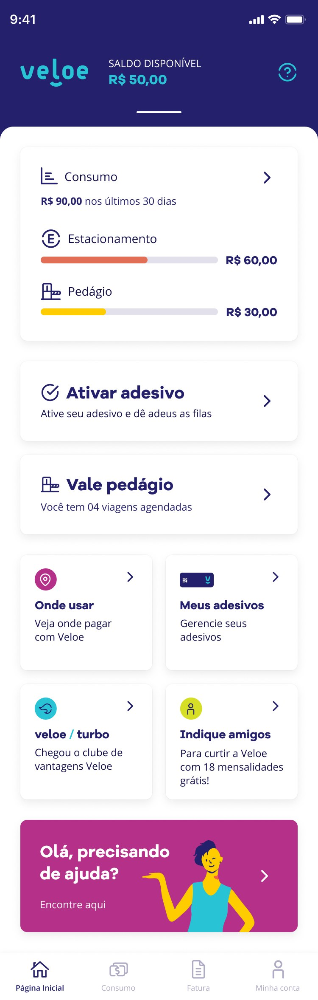
1 · Card em destaque
Cards brancos e ícones coloridos. A ativação ganha um card destacado. Role dentro da tela, para cima ou para baixo, para ver a home inteira.
Em destaque, palavras escolhidas por mais de um participante.
Na home testada, o cliente precisava deduzir que a ativação estava em “Meus produtos”. Na proposta, a própria home passou a nomear a tarefa: “Ativar adesivo”. A versão final juntou o carrossel de atalhos da versão 2, elogiado por todos os participantes, com os cards coloridos da versão 3, que tiveram a reação mais positiva.
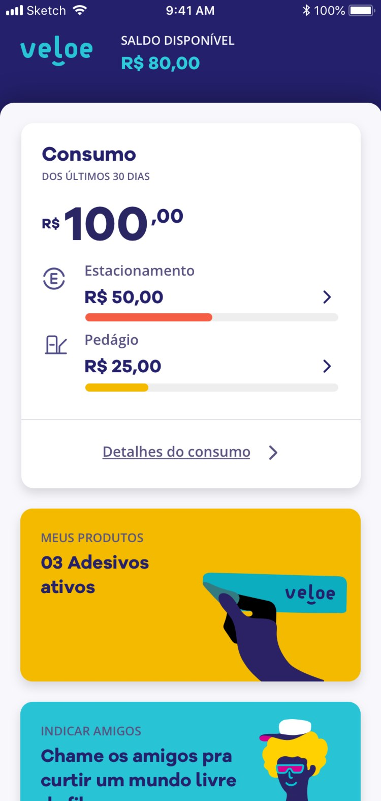
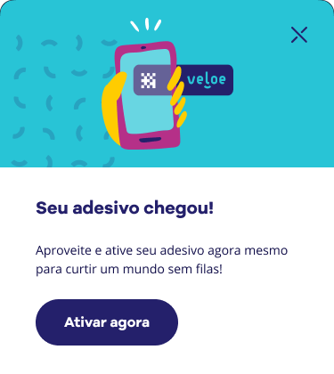
As duas homes no mesmo estado, com o cabeçalho retraído.
Ao cruzar teste de usabilidade, diário de uso e escuta de chamadas, distingui dificuldades diferentes de ativação e identifiquei as palavras que clientes e atendentes usavam para a tarefa.
Recomendei padronizar o rótulo “Ativar adesivo” entre os canais e dar acesso à ação na própria home.
A B3 avaliava desativar o aplicativo em maio de 2024. Investiguei o que os investidores já faziam pelo app e o que perderiam se esse canal saísse do ar.
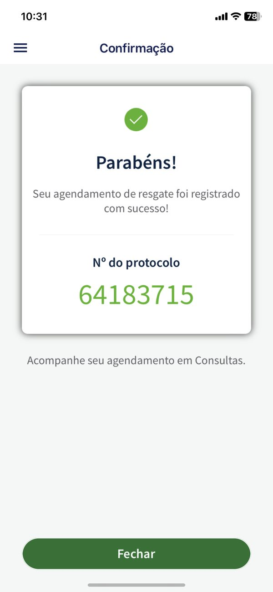
Em janeiro de 2024, o app do Tesouro Direto tinha média de 25 downloads por dia. Um app de investimento tinha, em média, 3.400. Antes de decidir pelo fim do canal, era preciso entender se a baixa adoção vinha de falta de interesse ou de outra coisa.
Fonte: AppBrain, janeiro de 2024
Olhamos os registros dos usuários mais assíduos do app. Em três meses, 81,6% das ações desse grupo foram consultas.
Extração da B3 de janeiro de 2024, com os três meses anteriores
Percentual sobre o total de ações do grupo. Investimentos e resgates incluem os respectivos agendamentos.
Acompanhar o próprio dinheiro respondia por quatro de cada cinco ações do grupo.
Restrições institucionais impediram o contato direto com investidores. O motivo da escolha pelo app ficou em aberto.
Se a consulta trazia as pessoas de volta, os problemas nesse fluxo mereciam atenção primeiro.
Sabíamos o que essas pessoas faziam com frequência. Os registros descrevem ações desse grupo, não de todos os investidores do Tesouro Direto.
Na avaliação de usabilidade, percorri os fluxos de acesso, investimento, consulta e resgate. Registrei 32 problemas, cada um com as heurísticas de Nielsen afetadas, um nível de gravidade e uma proposta. A consulta concentrava 11.
Avaliação heurística do app, janeiro de 2024
A gravidade é um julgamento da avaliação. Os registros de uso não medem a frequência de cada problema.
| Achado | Gravidade | O que observamos |
|---|---|---|
| Consulta de resgate invisível | Grave | O resgate só aparecia depois de filtrar por “Resgate”. |
| Sem investimentos em liquidação | Moderado | Investimentos ainda em liquidação não apareciam em Meus investimentos. |
| Consulta sem operação | Moderado | Para quem não tinha operações, a mensagem não explicava o que fazer. |
| Sem atalho no feedback de resgate | Leve | A confirmação indicava Consultas, mas só oferecia “Fechar”. |
| Sem atalho no feedback de agendamento | Leve | O mesmo padrão aparecia ao agendar um investimento. |
Escala de gravidade de Nielsen, de 0 a 4.
O fluxo levava do app para o site sem explicação, interrompendo a jornada.
O botão “Confirmar” não avisava que a compra não podia ser desfeita.
Categorias demais e hierarquia pouco clara dificultavam encontrar funções essenciais.
Depois de agendar um resgate, segui a orientação da confirmação e abri Consulta. Na aba “Operações”, a lista inicial mostrava investimentos. Para ver o resgate, precisei abrir o filtro e selecionar “Resgate”. Quem parasse na primeira tela podia ficar em dúvida se o pedido tinha sido registrado.
Fechar → menu → Consulta → filtro → “Resgate” → resgate na lista
Capturas feitas durante a inspeção, em janeiro de 2024.
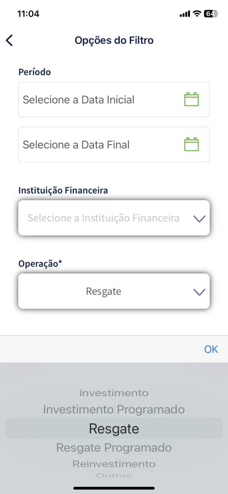
2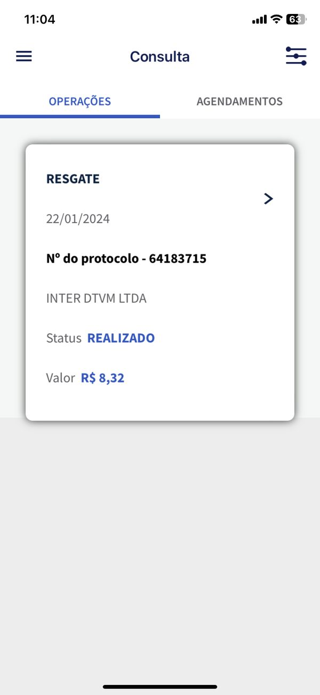
3O resgate tinha sido registrado. O problema era encontrá-lo. Propus duas mudanças: uma na saída da confirmação e outra na forma como a lista de operações abria.
As duas mudanças são recomendações da avaliação. O trabalho de interface e engenharia para implementá-las ficou fora deste projeto. Não há registro de teste ou métrica posterior dessa tarefa.
Reunimos em um relatório o uso registrado, os 32 problemas e um benchmark das landing pages de outros players do mercado financeiro. A pergunta da B3 era se valia investir na continuidade do app.
Organizamos as descobertas com o DIBB (Data, Insights, Beliefs, Bets), framework usado pelo Spotify para transformar dados em decisões.
Navegação no app e no site, mapas de calor e os 32 problemas da avaliação.
Não faltava interesse. Faltavam visibilidade do app, uso sem barreiras e integração com a jornada digital.
Promover o app, corrigir fluxos críticos e valorizar consultas e operações rápidas aumentariam adoção e retenção.
Reposicionar o app na jornada, redesenhar fluxos essenciais, criar um onboarding e priorizar as melhorias de maior impacto.
Para quem já voltava ao app para acompanhar o próprio dinheiro, o que importava era abrir a lista e reconhecer a operação que tinha acabado de fazer.
No mapa de calor do site, os visitantes não chegavam ao fim da página nem clicavam nos botões das lojas.
| Player | Chamada para o app na landing page | QR code para baixar | App como canal principal ou com recursos exclusivos |
|---|---|---|---|
| Nubank | Sim | Não | Não |
| Rico | Sim | Não | Sim |
| Íon Itaú | Sim | Sim | Não |
| TradeMap | Sim | Sim | Sim |
| Tesouro Direto | Só no rodapé | Não | Não |
Benchmark das landing pages, janeiro de 2024.
Saber quem desconhecia o aplicativo exigiria outra pesquisa.
Percorri os fluxos do app e registrei cada problema com heurística, gravidade e proposta. No resgate, cada achado levou a uma mudança específica.
Ao cruzar o uso registrado com os problemas encontrados, mostramos por que corrigir a consulta importava na decisão sobre o app.
O Digio lançaria o Digio One, um cartão Visa Signature oferecido a quem já era cliente. Testei a oferta e o portal de benefícios para entender se as pessoas percebiam o valor do novo cartão e onde consultariam as vantagens depois da troca.
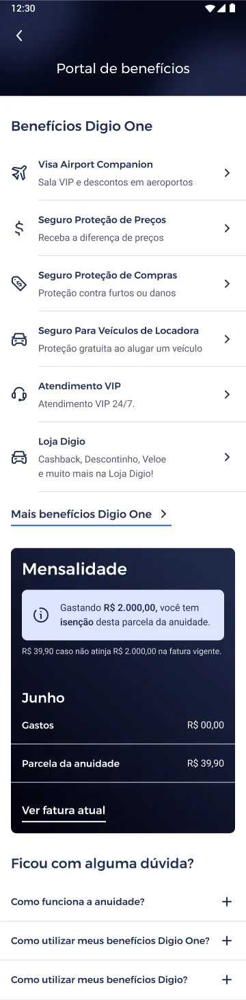
Planejei a pesquisa, escrevi o roteiro e montei o protótipo. Conduzi as sessões com clientes do Digio entre julho e agosto de 2022. O time precisava responder três perguntas.
E quais palavras deixavam o cartão e a cobrança claros.
E se entendia a organização da tela.
Sem que ninguém apontasse para ela.
Dividi a sessão em duas tarefas. Primeiro, pedi que explorassem a oferta e solicitassem o cartão, pensando em voz alta. Depois da troca simulada, pedi que procurassem onde consultar as novas vantagens.
Pensando em voz alta, do convite até a confirmação do pedido.
Já com o novo cartão, a partir da tela inicial.
Deixei que escolhessem o caminho. Indicar o portal pelo nome teria dado uma pista que o app precisava oferecer sozinho.
Só perguntei sobre ela no encerramento, a quem não tinha comentado antes. Assim, a percepção apareceu sem indução.
Média de cartões por participante. Além do Digio, citaram Nubank, Santander, Itaú, Banco do Brasil, Bradesco, Original, Méliuz e Carrefour. Alguns já tinham variantes como Nubank Platinum e Santander Unique. A oferta seria comparada com cartões que a pessoa já usava.
Perfil recrutado: clientes ativos do Digio com renda declarada acima de R$ 5.500.
A oferta cumpria o papel: os benefícios atraíam e a anuidade foi bem recebida, pela chance de isenção. A dúvida era aplicar a regra à própria fatura.
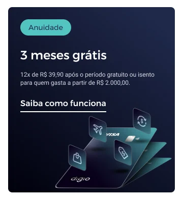
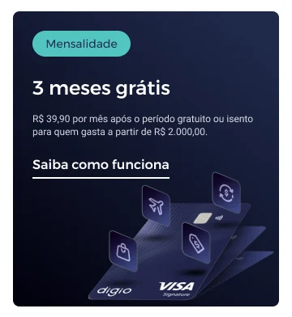
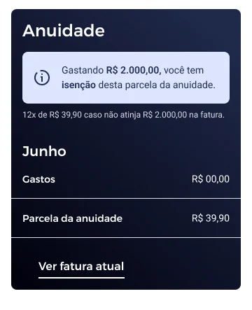
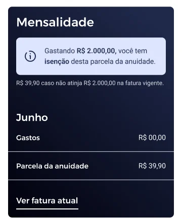
A nova tela inicial foi notada. O atalho para o portal de benefícios, na mesma tela, passou despercebido pela maioria.
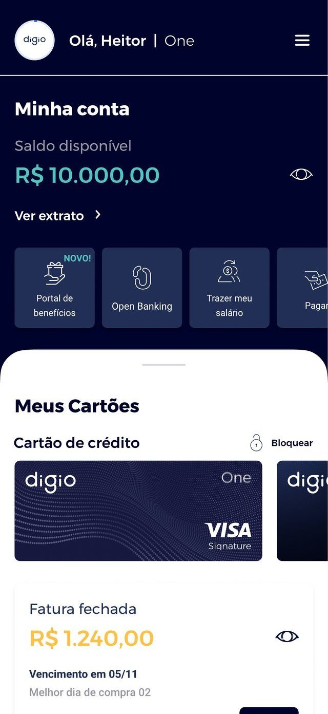
AntesDepoisDepois da troca, mudavam o cabeçalho, as cores e o desenho do cartão. A maioria percebeu a diferença, principalmente pelo visual.
Arraste para comparar antes e depois da troca.
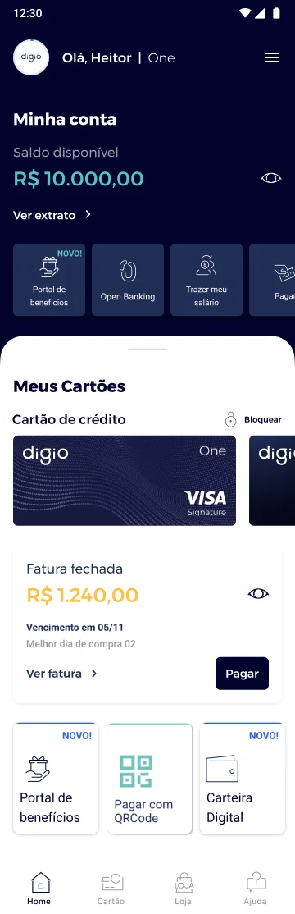
Na tela testada, o atalho ficava em um carrossel dentro de “Minha conta”, junto de ações como Pix e transferência. Onde você procuraria as vantagens do cartão?
Usei Atomic Research para discutir essa decisão com o time. Cada passo partiu do anterior: o que vimos nas sessões, uma explicação possível e a recomendação.
A maioria não notou o “Portal de benefícios” no carrossel.
No meio de Pix e transferência, com menos peso que o rodapé.
Manter o acesso no rodapé da tela inicial
Onde os botões já tinham mais destaque.
Uma oferta de assinatura tinha pouco apelo para quem já pagava pelo serviço. Recomendei preservar a ordem da oferta, identificar o cartão como Visa Signature logo na descrição e dar menos destaque às assinaturas.
A animação da troca mostrava que o cartão atual seria substituído. A anuidade ganhou destaque visual porque os estudos anteriores a apontavam como decisiva. Como a oferta funcionou nas sessões, recomendei manter a ordem e ajustar o conteúdo de quatro blocos.
Em verde, o que ganhava clareza. Em rosa, o que perdia destaque.
Com Digio One você tem:
Visa Airport Companion sugeria algo ligado a aeroportos. Faltava dizer, ainda no card fechado, que o benefício incluía salas VIP e descontos.
Cards da oferta recriados com os textos do protótipo.
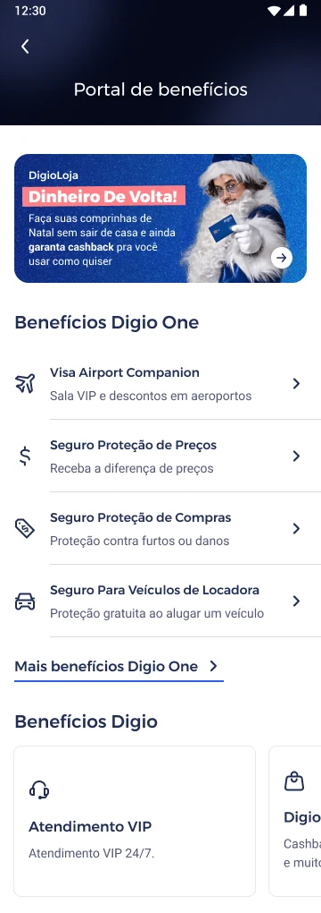
O portal interessava mais a quem planeja os gastos do que a quem já lembrava das condições da oferta. Para esse uso, o banner de promoção não fazia sentido.
Depois do teste, ajustei o protótipo com as recomendações e anotei o comportamento de cada componente para o desenvolvimento. Os ajustes da oferta entraram no handoff do MVP, junto da nova tela inicial.
Planejei a pesquisa, escrevi o roteiro e montei o protótipo. Conduzi as sessões sem dar pistas do caminho e separei o que vimos das explicações possíveis.
Recomendei onde manter o acesso ao portal, como explicar a cobrança e quais benefícios destacar. Os ajustes seguiram para o MVP.